Course concept brochure · September 2026Concept · unscouted
West to east · single stage · self-supported
Flores Race
A self-supported traverse of the island of fire, Labuan Bajo to Larantuka
Across Flores on farmers' tracks, over the volcanic spine and back to both coasts: a course concept in ten sections, with its optional loops, its hazards and the villages that will host it.
1,331 km · +32,841 m · 59% unpaved · 10 sections · 5 cultural checkpoints
Concept status. Every line in this document is routed over the mapped track network and has not yet been ridden or scouted by the team. It is a proposal for stakeholders and for the first scouting season, not a decision. Cover: Inerie and the Ngada villages, Copernicus Sentinel-2.
The concept
The idea in one page
Flores is only about 360 kilometres long, but it is a wall of volcanoes with two coasts. The paved Trans-Flores highway needs roughly twice that distance to cross it because it has to. A race that keeps leaving the highway to climb over the spine on farmers' tracks, drop to a forgotten coast and climb back again reaches well over 1,300 kilometres and more than 30,000 metres of climbing, most of it unpaved and a meaningful share of it on foot with the bike.
The course runs west to east, from Labuan Bajo, the Komodo gateway with international flights and a sunset harbour, to Larantuka, the Portuguese-Catholic town under Ile Mandiri at the island's eastern tip. West to east because the dry-season wind blows from the east-south-east, so riders earn every kilometre, and because the island's story reads that way: from Komodo and the Manggarai highlands to Ngada's megalithic villages, the Lio country around Kelimutu, the ikat weavers of Sikka and the Catholic east.
The format is borrowed deliberately from the Silk Road Mountain Race: one stage, fixed route, no outside support, mandatory checkpoints, a time limit of about two weeks, a dry-season window from late June to September. Some checkpoints are cultural: riders sign in at a village that has agreed to host the race, and the village earns from it. That agreement is the point, not a detail.
Design rules for the course
Prefer the small trackA farm track, a cattle path across savanna or a village-to-village footpath over a ridge always beats a paved road, even a scenic one.
Touch both coasts, repeatedlyEvery section that can cross the spine, does. The island is narrow; the course uses that.
Hike-a-bike is a feature, and it is honestWhere the bike is carried, the section says for how many kilometres, and scouts will have walked it.
Every section has a reasonA volcano, a village, a beach, a piece of history. If a stretch has no story, it is a link, and links are kept short.
Villages are hosts, not sceneryWae Rebo, Bena, Gurusina, Luba, Tololela, Wologai, Nggela and the others receive guests with protocol. No rider passes before the village council has agreed; where agreement is not possible, the route goes around.
Respect the hazard zonesActive volcanoes define exclusion radii the route honours on race day, with a pre-agreed reroute and an abort rule.
Resupply is sparse but never impossibleNo rider should be more than about 120 kilometres from food and water. The north coast and the Nagekeo interior need particular care.
In this brochure
The course at a glanceoverview map, numbers, profile
Riding it on Ride with GPSGPX files and import
01 · Komodo gate and the Mbeliling forestkm 0–102
02 · Wae Rebo and the south coast of Manggaraikm 102–266
03 · Manggarai highlandskm 266–371
04 · The forgotten north coastkm 371–528
05 · Ngada: megaliths under Ineriekm 528–657
06 · Ebulobo and the Nagekeo plainskm 657–798
07 · The blue-stone coast to Endekm 798–904
08 · Kelimutu and the Lio countrykm 904–1,054
09 · Sikka and the Portuguese southkm 1,054–1,141
10 · Egon and the far eastkm 1,141–1,332
Optional loops and alternatives7 options
Hazards and constraintsdated volcano statuses
Cultural threads and protocolhow to arrive as a guest
Logisticsairports, ferries, hubs
Photographs to sourceshot-list per place
Data, method and sources
Labuan Bajo → Larantuka
The course at a glance
Ten narrative sections chain 37 anchors from the Komodo gateway to the Portuguese east. The numbers below are computed from the routed geometry with SRTM elevation, the pipeline's smoothing and a 10-metre climbing threshold; they will move once scouts bring back GPS tracks, and Ride with GPS will show slightly different climbing figures from its own terrain model.
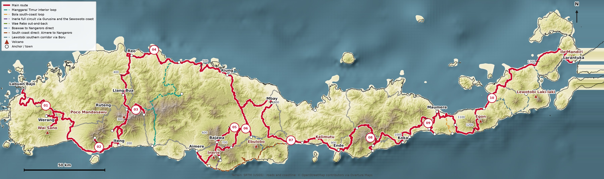
Main courseManggarai Timur interior loopBola south-coast loopInerie full circuit via Gurusina and the Sewowoto coastWae Rebo out-and-backBoawae to Nangaroro directSouth coast direct: Aimere to NangaroroLewotobi southern corridor via Boru
1,331
km, main course
+32,841
m climbing
59%
unpaved (estimate)
≈46
km hike-a-bike est.
1,382
km Ultra
1,386
km Ultra+
#
Section
Anchors
km
Climb m
Course km
Hike-a-bike
Cultural checkpoints
01
Komodo gate and the Mbeliling forest
Labuan Bajo → Mbeliling forest → Sano Nggoang → Werang
Riung → Soa (Mengeruda hot springs) → Bajawa → Bena → Aimere
129
3,280
528–657
high
Bena
06
Ebulobo and the Nagekeo plains
Aimere → Mataloko / Wogo → Boawae → Mbay
141
3,342
657–798
low
–
07
The blue-stone coast to Ende
Mbay → Nangaroro → Penggajawa → Ende
107
2,093
798–904
low
–
08
Kelimutu and the Lio country
Ende → Detusoko → Moni → Kelimutu → Wolojita → Nggela → Koka
149
4,704
904–1,054
medium
Kelimutu, Nggela, Koka
09
Sikka and the Portuguese south
Koka → Sikka village → Lela → Maumere
87
2,447
1,054–1,141
low
Koka
10
Egon and the far east
Maumere → Watublapi → Egon (Blidit) → Waiterang → Talibura → north of Lewotobi → Larantuka
191
3,776
1,141–1,332
high
–
Traverse
1,331
32,841
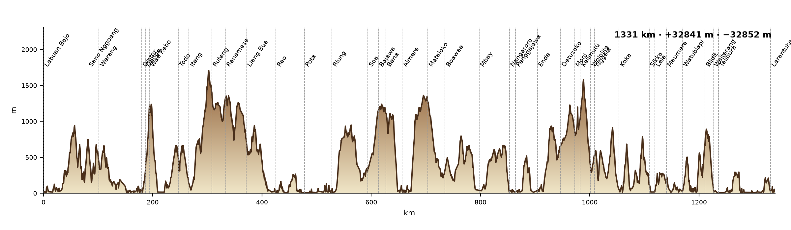
Elevation profile of the main course, SRTM, smoothed. Lowest point sea level, highest 1,707 m.
Working with the course
Riding it on Ride with GPS
The whole course exists as GPX files in the repository, under exports/gpx: the main traverse (with and without points of interest), the Ultra and Ultra+ variants, one file per section and one per optional loop or alternative. Ride with GPS imports them directly and keeps every farm track exactly as routed; it recomputes elevation, surface and cue sheet from its own data.
Import is two minutes per file: open the route planner (ridewithgps.com/routes/new), click Import in the Route panel, choose Upload File, pick a GPX, Add to Planner, name it, set it private while the course is a concept, Save. Put everything in a collection called Flores Race so the team finds it in one place. The dashboard's Upload page takes several files at once; choose Save as Route, not Add to My Activities.
The maps in this brochure are rendered by the project's own pipeline from the same data (SRTM relief, roads and coastline from OpenStreetMap via Overture Maps). They are not planner screenshots: the environment this brochure was produced in could not reach Ride with GPS. Once the routes are in the planner, its screenshots can complement these maps; the geometry is identical.
Every file carries the anchors (and, where noted, points of interest) as waypoints with their cumulative kilometre, resupply, water and sleep status. Regenerate with python3 pipeline/export_gpx.py. Full instructions: docs/ridewithgps.md.
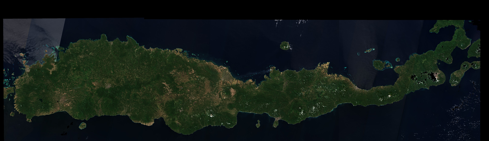
Flores from orbit, west to east: about 360 kilometres of volcanoes between two coasts. Copernicus Sentinel-2 composite of the least cloudy dry-season scenes of 2025 and 2026.
01
Section 01 · km 0 to 102
Komodo gate and the Mbeliling forest
Leaving the tourist town for the first farm tracks
Labuan Bajo → Mbeliling forest → Sano Nggoang → Werang
The race starts in the one place every rider already half-knows, and turns its back on it within a few kilometres.
Labuan Bajo is dragons, dive boats and an international airport: the busiest harbour in the region, fully geared, expensive in August. The course leaves the waterfront and climbs into the Mbeliling forest reserve, roughly 15,000 hectares of Important Bird Area rising to about 1,275 metres, the highest ground in West Manggarai. It holds all four birds found only on Flores: the Flores hanging parrot, the Flores monarch, the Flores crow and the Flores scops owl. This is the unglamorous, verifiable version of remote, and it is the first test of the course's first rule: the farm track through the forest rather than the highway that skirts it.
Two waterfalls give the section its texture. Cunca Wulang is a river canyon with deep pools and cliff-jumping spots near Wersawe, about 30 kilometres from town, run informally by the village for a small fee: spectacular and easy, no dismount needed. Cunca Rami, a 30-metre fall deep in the forest near Wae Lolos, is a real jungle hike-a-bike whose exact position the desk data itself admits is unresolved, with local sources and the terrain model disagreeing by 400 metres of altitude. That is precisely why this section opens the first scouting season.
The payoff is Sano Nggoang: an elliptical caldera lake at about 750 metres, reported as the largest crater lake in East Nusa Tenggara and among the deepest volcanic lakes anywhere, with solfataras and hot springs steaming on its south-eastern shore below the 903-metre Wai Sano volcano. Most Komodo visitors never see it. The section ends eight kilometres north at Werang, the sub-district capital: a parish church, a boarding school, a police post, a handful of kiosks. The first honest resupply of the race.
Section 01 · places, seen from orbit
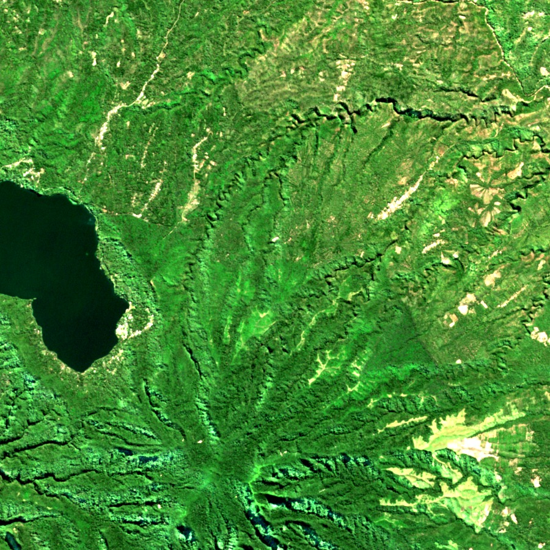
Sano Nggoang and Wai Sano
The caldera lake from orbit: the ellipse of dark water inside the Wai Sano complex. The lakeshore village of Wae Sano has been the centre of a contested geothermal project since Flores was designated a national geothermal priority; two international financiers withdrew over consent failures with the Indigenous Manggarai community. The race should know this and take no side.
Sentinel-2 · 2026-07-11 · 9 km box · contains modified Copernicus Sentinel data
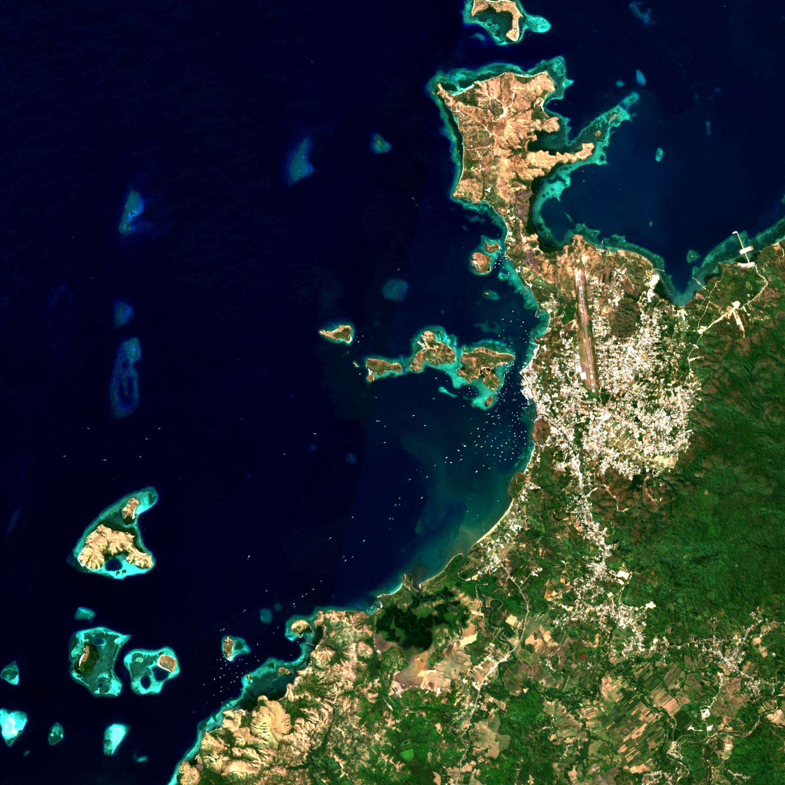
Labuan Bajo bay
The start line: harbour, liveaboards, the airport on the hill. Dry season here runs May to September; August is the driest and the busiest month.
Sentinel-2 · 2026-07-12 · 18 km box · contains modified Copernicus Sentinel data
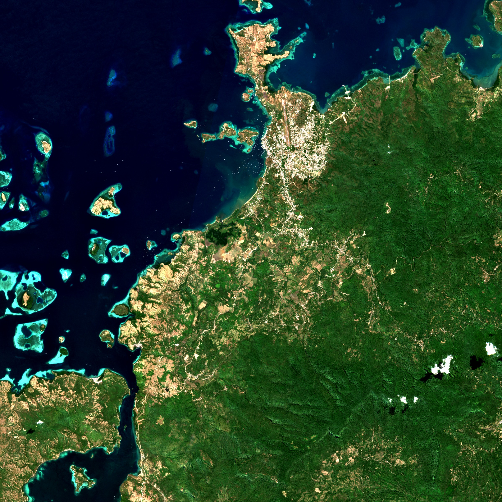
The Komodo gateway
Context, not course: Komodo and Rinca lie a boat ride west. The national park moved to a daily visitor quota with mandatory pre-booking in 2026; it is the reason the start town is crowded, and the reason its name carries.
Sentinel-2 · 2026-07-12 · 30 km box · contains modified Copernicus Sentinel data
For the scouts
Is the Mbeliling forest track rideable end to end, or does it need dismounts near the two waterfalls?
Fix Cunca Rami's position by GPS: desk position and terrain elevation disagree by about 400 metres.
Homestay capacity at Sano Nggoang and Werang for race-week volume.
02
Section 02 · km 102 to 266
Wae Rebo and the south coast of Manggarai
The flagship cultural checkpoint, reached the only way it can be
Section 02 · Wae Rebo and the south coast of Manggarai
No road has ever reached Wae Rebo. Every visitor arrives the way the village's own rice and roof thatch do: on foot.
From Werang the course drops off the plateau to a stretch of south coast almost no visitor sees. Dintor is a white-sand beach village in Satar Ruwuk with Pulau Mules offshore and no services; Denge, a few kilometres inland, is the last village a vehicle reaches and the trekkers' staging post, with a rice-field homestay of about nine rooms. Beyond Denge everything moves on foot or on someone's back.
The Wae Rebo trail is about eight kilometres and 700 metres of climbing through rainforest, two and a half to three hours for a trekker, considerably more with a loaded bike. At the top stand seven cone-roofed mbaru niang around a ceremonial ground at about 1,100 to 1,200 metres: five floors of wood, bamboo and palm thatch built without nails, rebuilt by the community in the traditional form rather than in tin, which won the village UNESCO's Asia-Pacific Award for Cultural Heritage Conservation in 2012. Oral tradition names a founder, Empo Maro, who came from Minangkabau in Sumatra guided by a dream. Visitors are received with the Wae Lu'u welcome ceremony, sleep inside the houses and pay a set contribution; roughly IDR 350,000 for an overnight package and a IDR 50,000 ceremony donation are the figures currently reported, and there is no visitor quota. None of that can simply be inherited by a race: the village council's agreement is the precondition for this checkpoint.
The onward trail from Wae Rebo towards Todo is the section's open question; no public trekking source describes it, and every visitor account goes back down to Denge. The course therefore carries an out-and-back alternative. Todo, reached by road, is where Manggarai tradition places the seat of its old kingdom and its oldest standing mbaru niang, the drum house Niang Todo: the same architecture as Wae Rebo, with the origin story attached, and elders who receive guests with a guest book and a small donation. The section ends at Iteng, the Satar Mese sub-district capital on the coast: a market, a parish, a health centre, the first real food after two remote days.
Section 02 · places, seen from orbit
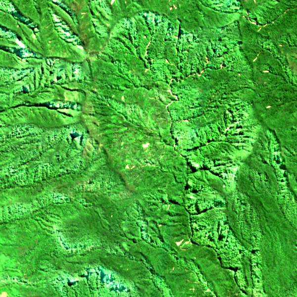
The Wae Rebo valley
Forest, ridges and the clearing at the head of the valley. The seven houses are said to stand for the seven peaks around them. The trail is landslide-prone in the wet season; 2025 and 2026 traveller reports describe intermittent closures and bamboo-bridge repairs.
Sentinel-2 · 2026-07-11 · 6 km box · contains modified Copernicus Sentinel data
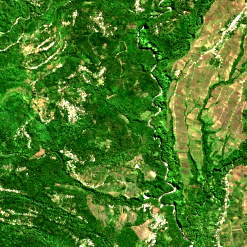
Todo
A short climb off the Ruteng road. No hike-a-bike here; the deep-history counterweight to the trek.
Sentinel-2 · 2026-07-11 · 5 km box · contains modified Copernicus Sentinel data
For the scouts
Is the Wae Rebo onward trail passable with a loaded bike, or is the out-and-back the default?
Terms and timing of a Wae Rebo checkpoint and a Todo visit with the village councils.
Field GPS fixes for Dintor and Denge; both are still desk placements.
Options touching this section
Wae Rebo out-and-back — If the onward trail from Wae Rebo cannot be done with a bike: climb to the village, descend the same path to Denge, then ride the remote-profile road to Todo. 60 km instead of 60 km (+0 km). See the options chapter.
03
Section 03 · km 266 to 371
Manggarai highlands
From a warm coast to a cold cathedral town, the island's roof and its oldest human story
Roughly 1,100 metres of climbing separate the coast at Iteng from Ruteng's cool air, and the section only gets higher from there.
Ruteng sits at about 1,200 metres: a compact, walkable Catholic hill town of red roofs and rice terraces, sixteen to twenty-four degrees, the best full resupply of the whole west (a central market, a hospital, banks, many homestays). Its cathedral, consecrated in 2002, seats 2,500; the Golo Curu hill above the town carries a Marian grotto and the panorama. On the most Catholic island of Indonesia's most Catholic province, this is where the contrast with the customary-law villages just behind the riders is sharpest.
A short detour west of town, the Cancar rice fields resolve from a viewing hill into a spider's web. This is lingko, the Manggarai communal land system: a field divided outward from a centre point, the lodok, into wedges whose width reflects each family's standing, with planting and harvest rites at the centre. It is the one spectacular view on the whole course that costs no hike-a-bike at all, for a fee of a few thousand rupiah and a ten-minute walk.
South-east of Ruteng rises the roof of Flores: Poco Mandasawu, the island's highest point at about 2,370 metres, and Poco Ranaka with its 1987 lava dome Anak Ranakah, inside the 32,000-hectare Ruteng Nature Recreation Park. The course skirts this massif on the way to Ranamese, a small, 21-metre-deep crater lake at 1,220 metres with a warung at the car park: the highest and coldest rest stop of the race, with the Cunca Rede waterfall a short trail away. Then it descends north to Liang Bua, a single wide limestone chamber where, in September 2003, a joint Indonesian-Australian team found the near-complete skeleton of a one-metre-tall human relative, Homo floresiensis. A 2016 re-dating put the youngest bones at 60,000 to 100,000 years, and at Mata Menge in the So'a basin the lineage reaches back about 700,000 years. The cave is still used by the local community for ceremonies; a guide meets visitors at the entrance, and a small museum shows casts.
Section 03 · places, seen from orbit
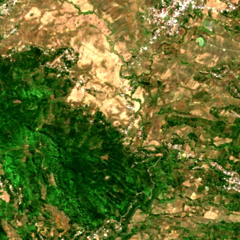
The Cancar lingko
The spider-web fields from orbit. Sources put Cancar 17 to 25 kilometres from Ruteng; the viewing hill stands beside a telecoms tower.
Sentinel-2 · 2026-07-11 · 4 km box · contains modified Copernicus Sentinel data
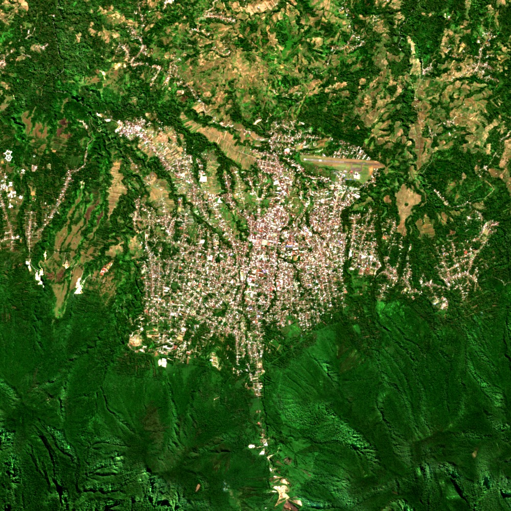
Ruteng
The highland capital on the Trans-Flores. Full resupply, RSUD Ruteng hospital, many homestays; cool nights.
Sentinel-2 · 2026-07-11 · 10 km box · contains modified Copernicus Sentinel data
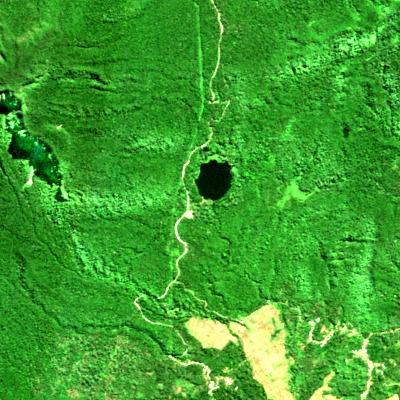
Ranamese
Five hectares of still water at 1,220 metres, sixteen kilometres from Ruteng. The only resupply between Ruteng and Liang Bua is the warung here.
Sentinel-2 · 2026-07-11 · 4 km box · contains modified Copernicus Sentinel data
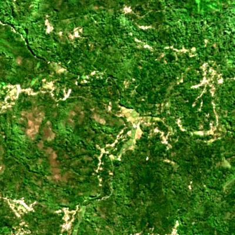
Liang Bua
The valley of the hobbit cave, fourteen kilometres north-west of Ruteng. Entrance fees are reported inconsistently (IDR 30,000 to 80,000); confirm on the ground.
Sentinel-2 · 2026-07-11 · 4 km box · contains modified Copernicus Sentinel data
For the scouts
Is there a farm-track alternative to the paved road over the Ranamese pass?
A more direct track between Ranamese and Liang Bua than the current chain, which doubles back near Ruteng?
Which summit elevations to print for Poco Mandasawu and Poco Ranaka: sources conflict by up to 200 metres.
Options touching this section
Manggarai Timur interior loop — Ruteng to the south coast at Borong, the unscouted Elar interior, back to the north coast at Pota; skips Ranamese, Liang Bua and Reo. 204 km instead of 170 km (+34 km). See the options chapter.
04
Section 04 · km 371 to 528
The forgotten north coast
Savanna, lontar palms, small ports, and the water question that will define the race
Dry, hot, sparsely populated and beautiful: the section the concept names as its defining unknown.
Reo is an old north-coast market town with a mosque and a church side by side, a bank, a health centre and a Dutch-era cannon on the hill above the bay; its working harbour, Kedindi, a few kilometres west at the river mouth, is talked of as the province's next big export port. Local history traces the first settlement to the Bima sultanate's traders; under the Dutch, the Manggarai resistance leader Motang Rua was shipped through Reo into exile. It is the last full resupply before the driest stretch of the course.
East of Reo the coast becomes lontar-palm savanna and wide bays with almost nobody in them. The desk data called this corridor undocumented; current sources say a road exists the whole way, paved from Ruteng to Reo and Pota, then rough, potholed and periodically cut by landslides between Pota and Riung via Buntal, Golo Lijung and Dampek. The honest open question is not whether a track exists but how good it is with a loaded bike, and above all where the water is. In August 2026 the district was under an emergency dry-season water-trucking operation covering Pota, Nangambaur, Golo Lijun and posts across Sambi Rampas and Borong. Water here is not a hypothesis; it is the constraint.
Pota, the Sambi Rampas sub-district capital, is the midpoint and the junction where the Manggarai Timur interior loop rejoins the coast. Riung is the reward: a small fishing port at the gate of the Seventeen Islands Marine Park, more than twenty coral islets reached by hired boat, with a colony of thousands of flying foxes that lifts off Pulau Ontoloe at dusk, snorkelling over reef, and half a dozen simple guesthouses. Park entrance is reported at about IDR 100,000; a day boat for a small group around IDR 400,000 per person.
Section 04 · places, seen from orbit
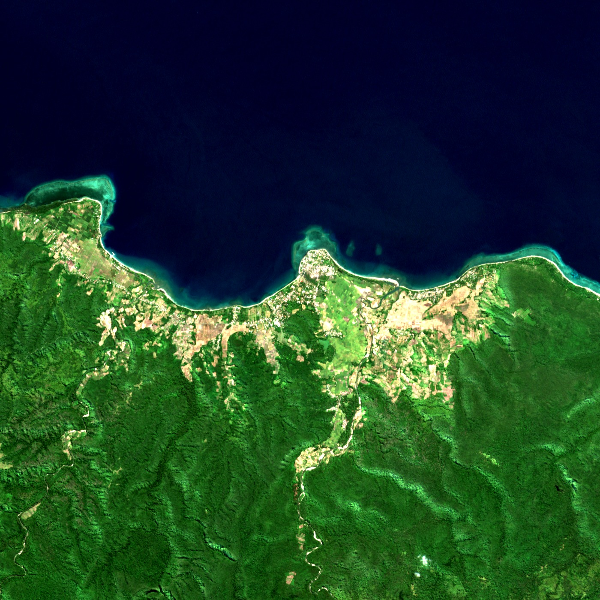
The savanna between Reo and Pota
Bays, dry riverbeds and palm savanna from orbit. Early departures, shade at midday and a mandatory water-carry rule belong to this section.
Sentinel-2 · 2026-06-01 · 14 km box · contains modified Copernicus Sentinel data
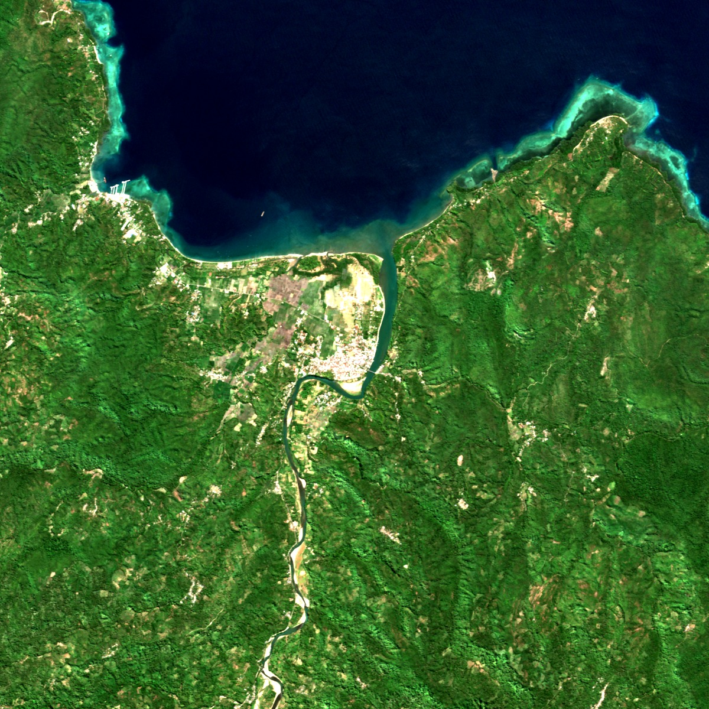
Reo and the Kedindi harbour
The Wae Reo river mouth and the port. Paved road south to Ruteng; an active, not sleepy, waterfront.
Sentinel-2 · 2026-07-11 · 12 km box · contains modified Copernicus Sentinel data
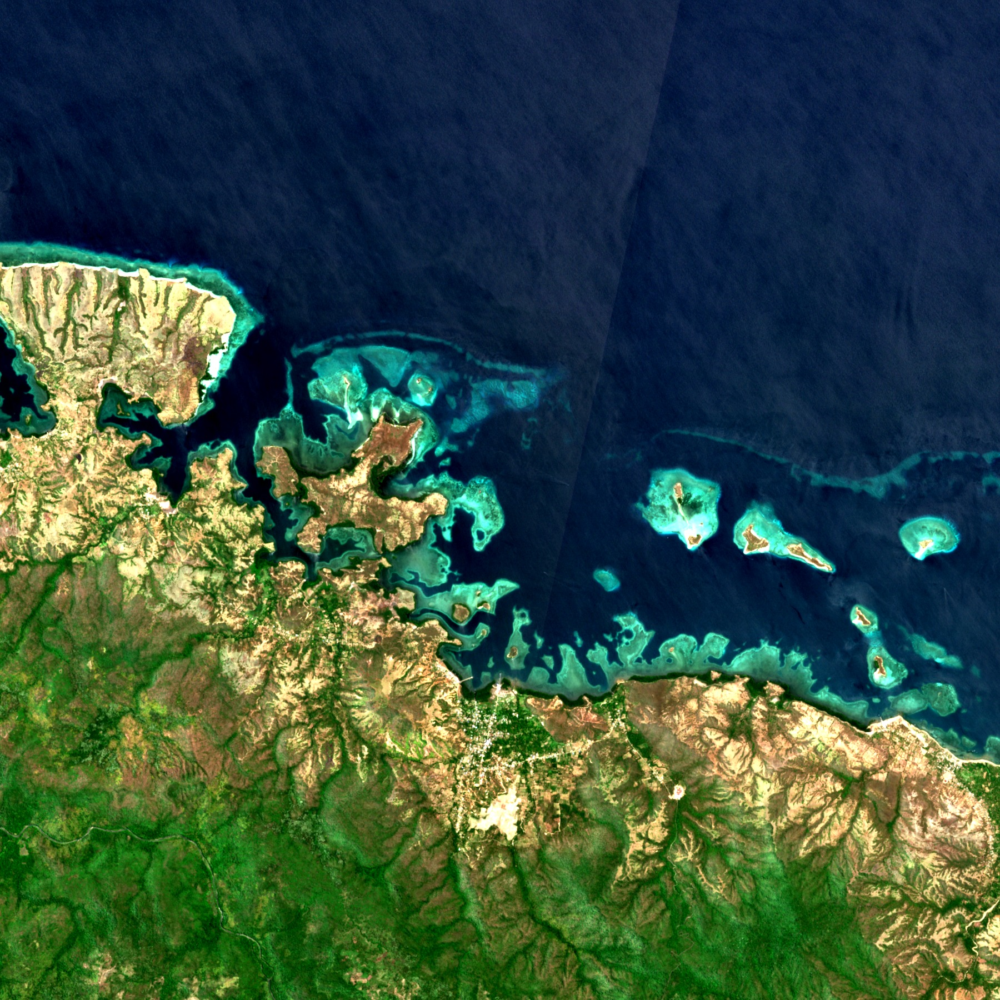
Riung and the Seventeen Islands
Islets, reef and mangrove north of the village. The Timor monitor lizard lives here; a locally named larger monitor, the mbou, is reported at Torong Padang, thinly sourced.
Sentinel-2 · 2025-09-22 · 18 km box · contains modified Copernicus Sentinel data
For the scouts
Ride the Pota to Riung road end to end: rideable as a continuous line, or portage sections?
Where exactly is water between Reo and Riung in August, and which villages can host a water point?
Which island carries the flying-fox colony: Ontoloe per current sources, Tembang per the curated data?
Options touching this section
Manggarai Timur interior loop — Ruteng to the south coast at Borong, the unscouted Elar interior, back to the north coast at Pota; skips Ranamese, Liang Bua and Reo. 204 km instead of 170 km (+34 km). See the options chapter.
05
Section 05 · km 528 to 657
Ngada: megaliths under Inerie
Cultural checkpoints under a near-perfect volcano
Riung → Soa (Mengeruda hot springs) → Bajawa → Bena → Aimere
The villages beneath Inerie orient their ancestor shrines towards its slope. The mountain is a presiding relative, not scenery.
From the coast at Riung the course climbs to the Bajawa plateau, eleven hundred metres up, with a stop halfway that riders will remember: the Mengeruda hot springs at Soa, warm river pools in a jungle valley near the airstrip, ticketed at a few thousand rupiah and open eight to six. Bajawa itself is a cool highland capital with a market, hotels and ATMs, the last full service before four days of minimal-service villages. Wolobobo hill above the town is the plateau's best sunrise: mist pooling below, Inerie's silhouette, Ebulobo far to the east on a clear morning.
Nineteen kilometres south, Bena is the reference image of Ngada culture: two rows of thatched houses on a narrow ridge framing a stone-terraced square of megalithic tombs and paired ngadhu and bhaga, a carved post for each clan's male ancestor and a small thatched house for the female one, nine pairs for nine clans. Guests sign a book and leave a donation (IDR 10,000 to 25,000 is commonly cited). Luba, a few hundred metres away, has four clans and carved animal motifs and far fewer visitors; Tololela, on a steep hillside at 650 metres, is where travellers actually sleep in the village; Gurusina, on Inerie's south-eastern flank, was rebuilt in traditional materials after a fire on 13 August 2018 destroyed 27 of its 33 houses while the village watched a football match. Each has its own council, and each checkpoint needs its own agreement. Reba, the Ngada new-year festival of yams and ancestors, runs from late December into January: spectacular, and outside the race window.
Inerie is 2,245 metres, the highest peak in Ngada, dormant since a smoke plume in 1911, and climbed from Watumeze in three to four hours over loose scree with no shade and more than 1,500 metres of gain. The main course crosses its shoulder from Bena down to the coast at Aimere, five to ten kilometres of steep, loose hike-a-bike that nobody has yet done with a loaded bike. The Inerie full circuit is the alternative: Bena, Gurusina, the wild southern slope down to the sea at Sewowoto, then the coast road west. Aimere closes the section as a working port: the ferry to Sumba and Kupang, and household stills turning lontar palm sap into arak over open fires.
Section 05 · places, seen from orbit
Inerie and Bena
The cone from orbit, Bena and Luba on the ridge to its north-east, Gurusina on the south-eastern flank, the sea to the south. The shrines in every village square face the slope.
Sentinel-2 · 2026-07-11 · 16 km box · contains modified Copernicus Sentinel data
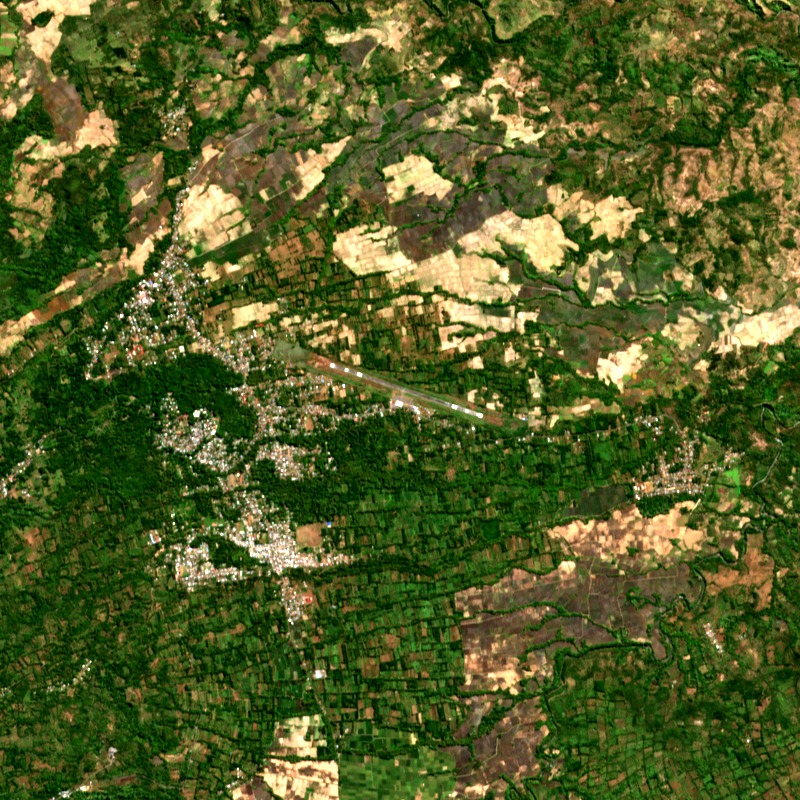
Soa and the Mengeruda springs
The Soa basin, the Turelelo airstrip and the warm river at Piga. Also the region of the Mata Menge fossil site, where the Homo floresiensis lineage reaches back about 700,000 years.
Sentinel-2 · 2026-07-11 · 8 km box · contains modified Copernicus Sentinel data
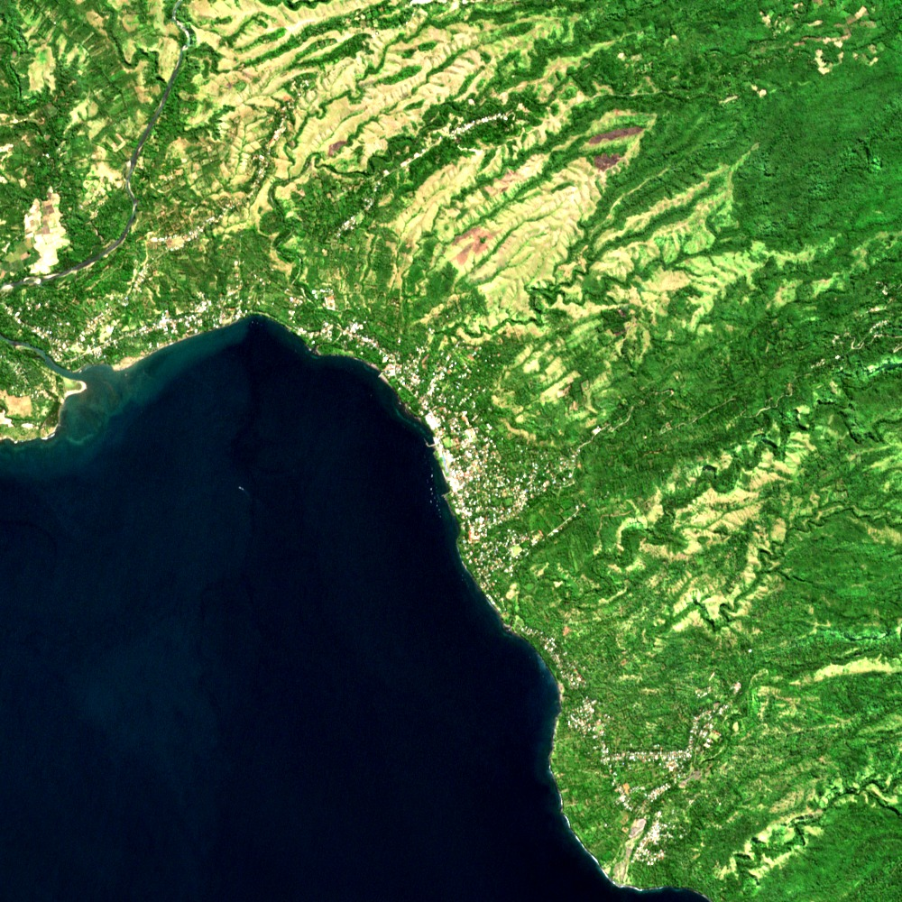
The Aimere coast
Lontar groves, the ferry port, the arak coast. The exact pier position still needs a field fix.
Sentinel-2 · 2026-06-01 · 10 km box · contains modified Copernicus Sentinel data
For the scouts
Is the Bena-side Inerie shoulder descent safe with a loaded bike?
Which villages will host checkpoints, under what terms, and does Bena offer beds at all?
The Sewowoto coast and the Gurusina descent for the full-circuit option: rideable, walkable, water?
Options touching this section
Inerie full circuit via Gurusina and the Sewowoto coast — Round the whole cone: Bena to the rebuilt village of Gurusina, down the wild south flank to the sea at Sewowoto (Ena Bhara beach), then the coast road west to Aimere. Network-routed; the middle leg has the maximum remoteness index and is unscouted. 35 km instead of 30 km (+5 km). See the options chapter.
06
Section 06 · km 657 to 798
Ebulobo and the Nagekeo plains
A steaming seminary, a live volcano farmed to the treeline, and the island's rice bowl
Back up to the plateau, round the cone of Ebulobo, and down the Aesesa valley to the north coast.
Mataloko is the section's postcard: a whitewashed colonial-era minor seminary, St Yohanes Berchmans, silhouetted against the steam of a geothermal field of more than twenty hot springs, fumaroles and mud pools across a thousand hectares. The springs are a real rider amenity; the geothermal plant behind them, operating since 1998, is also a live local-goodwill issue in the surrounding villages, which is worth knowing before any checkpoint or filming near it. Wogo, a sealed side road away, has nine ngadhu-bhaga pairs in a U-shaped compound and, a kilometre's walk further, the abandoned original site of old Wogo where megalithic tombs still stand in the grass and still serve ceremonies.
Boawae sits directly on the north-western slope of Ebulobo, an active 2,124-metre stratovolcano first recorded erupting in 1830, monitored from an observation post at Ekowolo, farmed almost to the treeline. A summit hike from Mulakoli takes about two hours of forest and a final scramble, with a village-mandated guide. Boawae is also the home of Etu, Nagekeo's ceremonial one-handed boxing, fought in palm-fibre gloves as part of the harvest-thanksgiving cycle in June and July: a living ritual, not a show, and one whose dates may fall inside the race window.
The Aesesa valley then opens into the largest rice plain of Flores, irrigated, flat and hot, and Mbay, the Nagekeo capital, with hotels and the last certain full resupply before the waist crossing. Its port, Marapokot, eight kilometres north, runs ferries to Palue and towards Maumere. Two alternatives shorten this section: straight from Boawae over to the south coast at Nangaroro, or the whole way along the remote south coast from Aimere to Nangaroro, skipping the plateau altogether.
Section 06 · places, seen from orbit
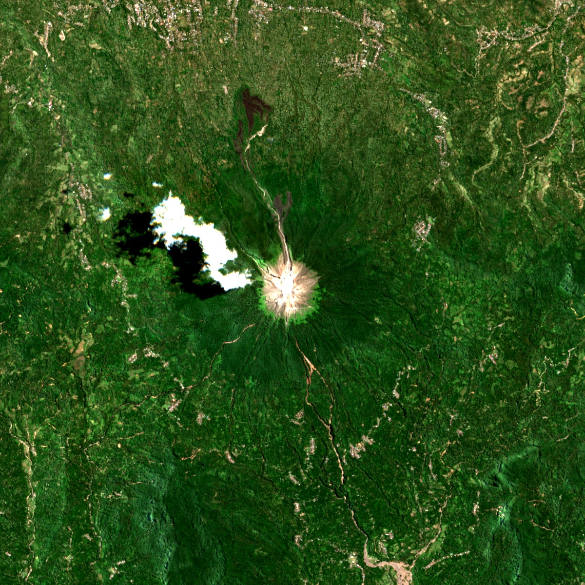
Ebulobo and Boawae
The cone from orbit, the town on its shoulder, the Trans-Flores at its foot. A magnitude 7.7 earthquake on 15 August 2026 triggered landslides near the summit, per Indonesia's geological agency, with no rise in volcanic activity.
Sentinel-2 · 2025-09-22 · 12 km box · contains modified Copernicus Sentinel data
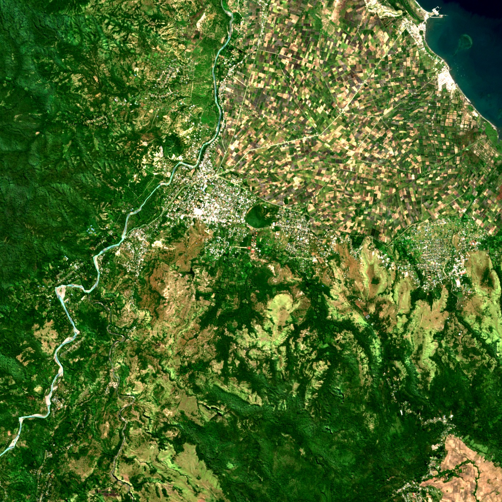
Mbay and the Aesesa plain
The rice bowl of the island: irrigation channels, causeways between paddies, the coast beyond. Nagekeo as a whole is dry; the plain is the exception.
Sentinel-2 · 2026-06-01 · 14 km box · contains modified Copernicus Sentinel data
For the scouts
Ridge-crossing footpaths between the coasts in Nagekeo: the real scouting work of this section.
Mbay's town-centre coordinate is still a desk estimate.
Exact Etu dates for the race year, and whether the race should meet or avoid them.
Options touching this section
Boawae to Nangaroro direct — Skip Mbay and the Aesesa plain: cross from Boawae straight over to the south coast at Nangaroro. Shorter and less remote; a bad-weather or time-limit fallback. 49 km instead of 118 km (-69 km). See the options chapter.
South coast direct: Aimere to Nangaroro — Stay on the remote south coast of Ngada and Nagekeo instead of climbing back to the plateau: drops Mataloko, Ebulobo, Boawae and Mbay. High remoteness, heavy climbing per kilometre, water unknown. 102 km instead of 197 km (-94 km). See the options chapter.
07
Section 07 · km 798 to 904
The blue-stone coast to Ende
Across the island's waist to a beach made of turquoise pebbles and the town where a republic was imagined
The narrowest part of Flores is short on the map and hard on the ground.
The crossing from the north-coast plain at Mbay to Nangaroro on the south coast is the least verified link of the whole course: a computed candidate over the island's waist, mostly unpaved, with about 1,700 metres of climbing packed into fifty-odd kilometres, and no source that confirms the specific line. It is scouting-priority terrain, not a confirmed road. Nangaroro itself is a farming and fishing district of grey-stone beaches; a homestay, unreliable water, and the last bed before Ende.
Twenty-five kilometres before Ende comes the section's headline: Penggajawa, a beach made not of sand but of smooth blue-green volcanic pebbles, called Batu Biru or Batu Hijau depending on whether they are wet. Local accounts differ on whether the stones come down the rivers from the mountains or up from the seafloor; what is certain is that residents hand-sort them to size for a small export trade, without machinery. Nobody sleeps here; it is a stop and a photograph.
Ende is the largest town of central Flores, about 90,000 people under the 637-metre Iya volcano, with a hospital, an airport, hotels, the Mbongawani market where traders wear woven sarongs, and the strongest history hook of the middle course. Sukarno lived here in Dutch-imposed exile from January 1934 to 1938, in a plain 1927 house on Jalan Perwira that has been a museum since 1954, its meditation room and library largely unchanged, free entry by donation. On the seafront a five-branched breadfruit tree, planted in 1980 to replace the original, marks where he is said to have worked out the five principles of the Pancasila while looking at the sea. Full resupply, and the gateway to the signature section.
Section 07 · places, seen from orbit
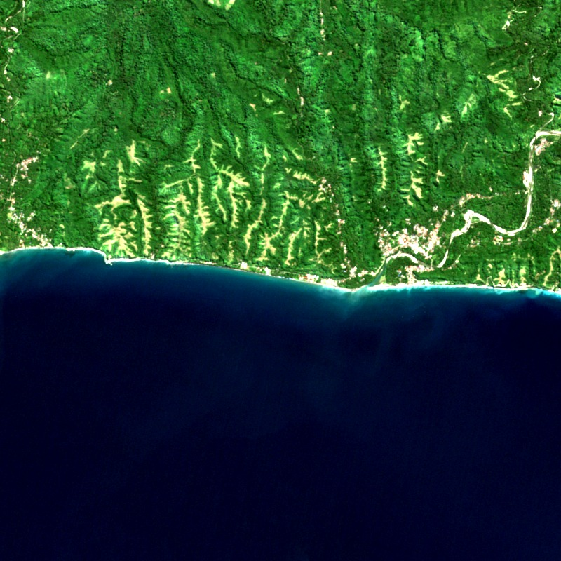
Penggajawa
The blue-stone coast between Nangapanda and Ende from orbit; the Bajawa to Ende road hugs the shore. The stones show their colour best wet.
Sentinel-2 · 2026-06-01 · 8 km box · contains modified Copernicus Sentinel data
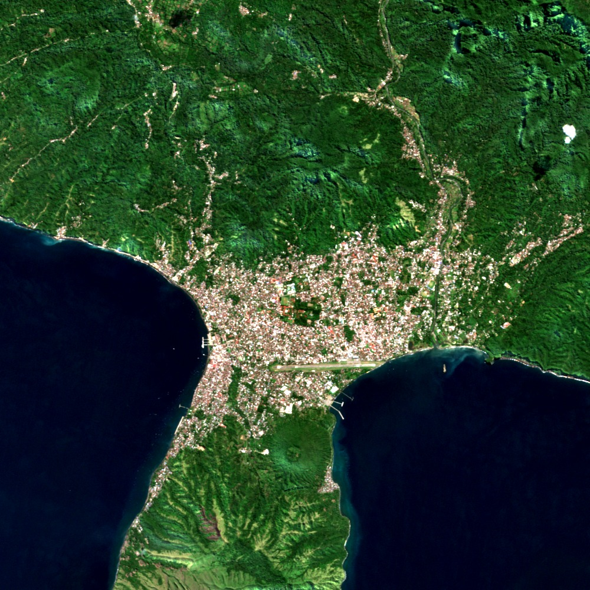
Ende under Iya
The town, its airport and the southern peninsula with Iya's crater. PVMBG held Iya at Level II with a two-kilometre stay-away radius through at least June 2026 after a rise to Level III in late 2024.
Sentinel-2 · 2026-06-01 · 10 km box · contains modified Copernicus Sentinel data
For the scouts
Ridge-crossing footpaths across the Mbay to Nangaroro waist: ground truth needed.
Which line to Nangaroro: over the waist from Mbay, direct from Boawae, or the south coast from Aimere?
Water and beds at Nangaroro and Penggajawa for a race field.
Options touching this section
Boawae to Nangaroro direct — Skip Mbay and the Aesesa plain: cross from Boawae straight over to the south coast at Nangaroro. Shorter and less remote; a bad-weather or time-limit fallback. 49 km instead of 118 km (-69 km). See the options chapter.
South coast direct: Aimere to Nangaroro — Stay on the remote south coast of Ngada and Nagekeo instead of climbing back to the plateau: drops Mataloko, Ebulobo, Boawae and Mbay. High remoteness, heavy climbing per kilometre, water unknown. 102 km instead of 197 km (-94 km). See the options chapter.
08
Section 08 · km 904 to 1,054
Kelimutu and the Lio country
The signature section: adat villages, rice terraces, three coloured lakes at dawn, the weavers, the white beaches
Ende → Detusoko → Moni → Kelimutu → Wolojita → Nggela → Koka
The only place on the course where riders are required to stop. In Lio belief it is where souls go.
Out of Ende the road climbs past Wolotopo, a Lio village stepped up a steep hillside above the sea where households still weave and keep their ceremonial houses, into cool highland farmland. The Detusoko terraces at 800 metres are compared with Ubud's and see a fraction of the visitors; Wologai, higher still at about 1,045 metres, is an 800-year-old circular village around a stepped stone ceremonial ground, rebuilt in traditional form after a 2012 fire, where elders receive guests with betel and a guest book and the annual Nggua Ria thanksgiving is still held. Moni, one road of homestays and warungs at the foot of the mountain, is where riders sleep before the dawn climb.
Kelimutu's three crater lakes sit at 1,639 metres on one summit inside a 5,300-hectare national park: Tiwu Ata Mbupu, the lake of the old people; the middle lake of young men and maidens; Tiwu Ata Polo, the bewitched lake. Each shifts colour independently over months as the hydrothermal chemistry changes; in July 2026 all three were shades of green. The Lio hold that the lakes sort the dead by how they lived, and every 14 August the mosalaki process to the rim for Pati Ka, feeding the ancestral spirits with red rice, pork, betel, tobacco and palm wine before a circle dance. The park opens at five in the morning; the foreign entrance fee is reported at IDR 150,000 on weekdays and 225,000 at weekends. Standing rules apply regardless of alert level: no approach to the rims, above all at the middle crater, no camping, dawn only. PVMBG recorded a rise in the middle lake's temperature through June 2026 and a January 2026 wall slide, and kept the volcano at Level I; the status is re-checked the week before the race, never assumed.
South of the mountain the course drops through the Lio weaving villages. Jopu and Wolojita share the back-strap loom tradition but now mostly dye with chemicals; Nggela, on a coastal ridge at 180 metres reached by a single-track road, is the village that defines Lio ikat, almost every household at a loom, its cloth collected internationally, and even here truly natural morinda-root dyeing, a two-year process, is rare and demonstrated rather than routine. Nggela is a named cultural checkpoint in the concept and needs council agreement like Wae Rebo. The section ends on white sand: Koka's twin coves below Wolowiro, two kilometres of unpaved spur through cocoa forest with a small private toll, and Paga's simple beachside warungs on the highway.
Section 08 · places, seen from orbit
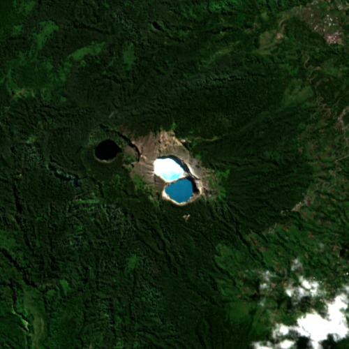
The three lakes
Kelimutu from orbit: the two adjoining craters and the third apart, the summit road and car park below. Colours in this image are those of one dry-season day; they change.
Sentinel-2 · 2026-07-11 · 5 km box · contains modified Copernicus Sentinel data
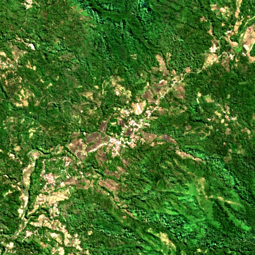
Detusoko
Terraced paddies, a small river and a suspension bridge on the Ende to Moni road, about 20 kilometres short of Moni.
Sentinel-2 · 2026-07-11 · 5 km box · contains modified Copernicus Sentinel data
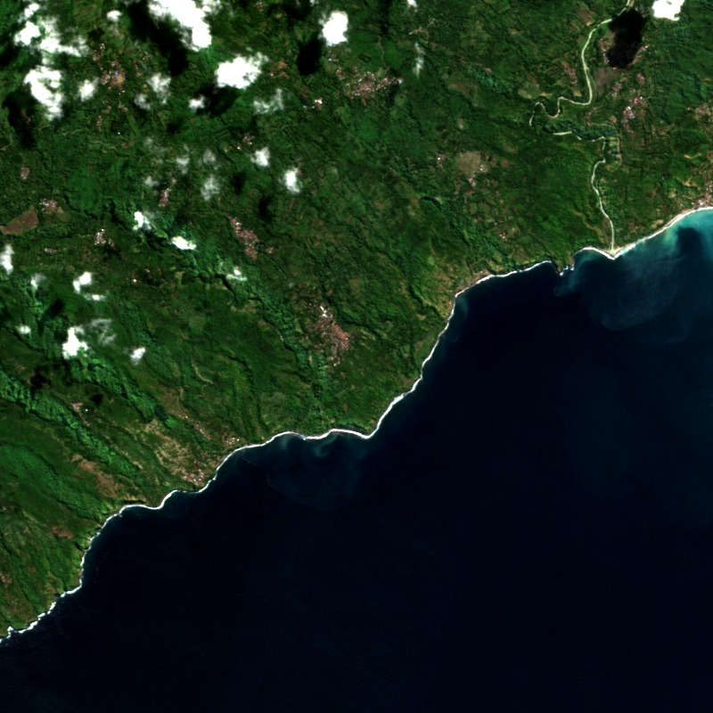
Nggela's coast
The ridge village and its single-track road above the south coast. The Wolojita coast road is known to be cut by landslides after heavy rain; frequency unknown.
Sentinel-2 · 2026-07-11 · 8 km box · contains modified Copernicus Sentinel data
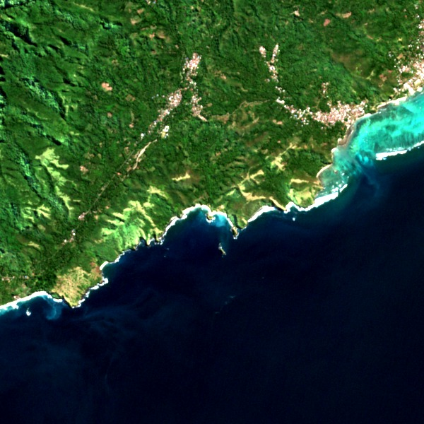
Koka
The twin coves and their headland, about 48 kilometres west of Maumere. The private access spur charges small fees at up to two checkpoints; whether cyclists pay is unconfirmed.
Sentinel-2 · 2026-07-11 · 6 km box · contains modified Copernicus Sentinel data
For the scouts
Checkpoint agreements, above all with Nggela.
How often the Wolojita coast road is cut, and the detour.
Field coordinates for Paga and Koka; a landslide-free line between the weaving villages and the beaches.
09
Section 09 · km 1,054 to 1,141
Sikka and the Portuguese south
A wooden church from 1899, a kingdom that kept its rajas, and the town the sea rebuilt
The quiet older half of the Portuguese story that the finish town will complete.
Sikka village gave its name to the regency and to a royal line, the Ximenes da Silva, whose descendants still live here: a kingdom whose rulers converted under Portuguese and Dominican influence in the sixteenth and seventeenth centuries and kept real authority into the twentieth, long after Portugal ceded the coast to the Dutch in 1859. Its wooden church of St Ignatius Loyola, begun in 1896 and first used for Mass on Christmas Eve 1899, blends a European Baroque form with ikat-motif interior decoration and teak shipped from Java. Every Good Friday the village carries a crucifix said to be a royal heirloom through the streets in the Logu Senhor procession. Sikka weavers make some of the island's most elaborate ikat, dark palettes with sailors, boats, shrimp and crabs from a seafaring ancestry.
Lela, the next sub-district capital along the coast, is a secondary seat of the same mission and a natural link into Maumere; a nineteen-metre Mary of All Nations statue stands on a hill in the area, its exact position relative to the route still to be confirmed. Nine kilometres inland from Maumere, on a hilltop, is Ledalero: St Paul's Major Seminary, founded in 1937 by the Divine Word Missionaries, one of the largest Catholic seminaries in the world, which has formed close to 1,500 missionary priests.
Maumere is the largest town of eastern Flores and the section's finish: airport, the TC Hillers hospital, market, hotels, a natural rest day before the hardest logistics of the race. At half past five in the morning on 12 December 1992 a magnitude 7.7 earthquake off the north coast sent tsunami waves ashore within minutes, killing about 2,000 people, some 700 of them on Babi island where the run-up reached 26 metres. The town's young building stock is that legacy. On the way in, Wuring is a Bajo, or mixed Bajo and Bugis, village built on stilts over the tidal flats, plank walkways instead of streets, boats under the houses: a working community to ride through slowly and respectfully, not a checkpoint.
Section 09 · places, seen from orbit
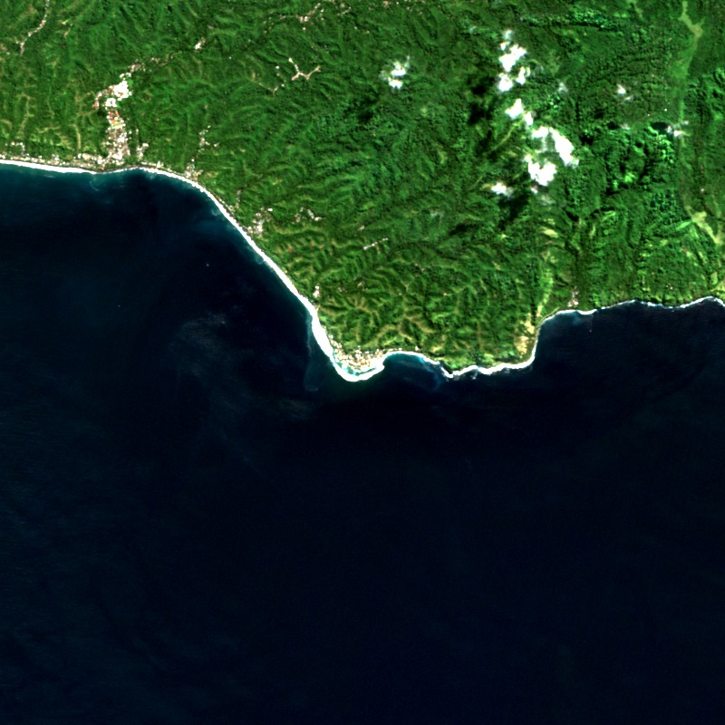
Sikka and Lela
The south-coast curve between the two mission villages. The road is generally good; no lodging confirmed in Sikka itself.
Sentinel-2 · 2026-06-29 · 8 km box · contains modified Copernicus Sentinel data
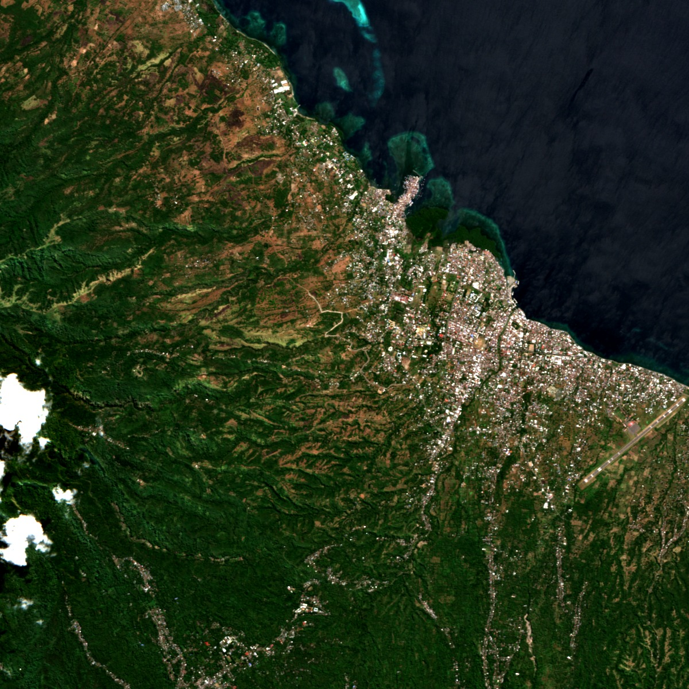
Maumere and Wuring
The bay, the town, the stilt village on the western flats, Frans Seda airport to the east. No dedicated bicycle shop was found anywhere on Flores; carry spares.
Sentinel-2 · 2026-06-29 · 12 km box · contains modified Copernicus Sentinel data
For the scouts
Any bicycle spares or mechanic in Maumere?
Position of Bukit Nilo relative to Lela and the route.
Whether cyclists pay the Koka access toll, and how much.
Options touching this section
Bola south-coast loop — Maumere to the Bola coast on the south side of the Sikka isthmus before climbing back to Watublapi and Egon. 46 km instead of 29 km (+16 km). See the options chapter.
10
Section 10 · km 1,141 to 1,332
Egon and the far east
Weavers, an active crater, a mangrove coast, the crux of the race and a finish under an ancestral mountain
Maumere → Watublapi → Egon (Blidit) → Waiterang → Talibura → north of Lewotobi → Larantuka
Spectacular and dangerous are the same fact here. The route is designed around it.
Eighteen kilometres south-east of Maumere, Watublapi is the most arrangeable cultural stop of the whole course: not an adat village to be petitioned but a weavers' cooperative, Sanggar Bliran Sina, founded in the 1980s with the help of a German priest, now more than forty members who spin local cotton, dye it with indigo and morinda from their gardens, tie the resist patterns and weave on back-strap looms, and welcome groups with dance and music by arrangement. Buying cloth is how a visiting group says thank you.
Egon is the far east's hike-a-bike: an active volcano of about 1,661 to 1,703 metres, sources disagree, with an acid crater lake and fumaroles, climbed from an unsigned trailhead beyond Blidit at about 790 metres, roughly four hours up through forest onto bare slopes and four down. It reawakened in 2004, forcing 7,000 people off its flanks, and has been quiet at Level I since; a river hot spring five kilometres along the access road is the reward for those who do not summit. Then the black-sand coast at Waiterang and Wodong, small dive resorts and Pulau Babi offshore, and Talibura, a mangrove-fringed village that is the last basic resupply before the longest push of the race.
Lewotobi Laki-laki, 1,584 metres, and Lewotobi Perempuan, 1,703 metres, two kilometres apart, have been in violent eruption since 3 November 2024, when the first eruption of the crisis killed nine or ten people and displaced more than 10,000. The alert reached the maximum Level IV more than once, most recently in September 2025; in 2026 alone MAGMA Indonesia logged 778 eruptions by late August, the second most active volcano in the country. Ash has repeatedly closed Maumere's airport and blanketed the Trans-Flores through Talibura. As of the last week of August 2026 PVMBG held Level III with a five-kilometre exclusion radius and standing lahar warnings for named rivers. The course therefore stays on the north coast, well outside the radius, and treats the highway corridor via Boru as an alternative to be opened only by a race-week go/no-go decision against the live bulletin, with an abort rule agreed in advance. Larantuka is the finish: a Portuguese-Catholic port converted in the 1500s, where the Confreria has run the Semana Santa processions for more than four hundred years, carrying the Tuan Ma statue, found on the beach around 1510, from its chapel to the Reinha Rosari cathedral each Holy Week, and where some residents still speak a Portuguese-influenced Malay creole. Above it stands Ile Mandiri, 1,502 metres, the ancestral mountain of the old kingdom, four to five hours from Riang Kemie: the optional sting in the tail, if it can be shown safe after two weeks of racing.
Section 10 · places, seen from orbit
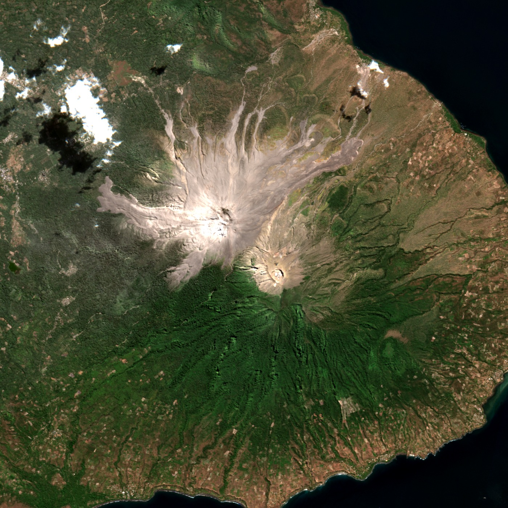
The Lewotobi twins
Laki-laki and Perempuan from orbit, with fresh deposits and the villages on their flanks. No part of the course approaches them; any photography is long-range from the coast. Status re-checked monthly and in race week.
Sentinel-2 · 2026-08-05 · 14 km box · contains modified Copernicus Sentinel data
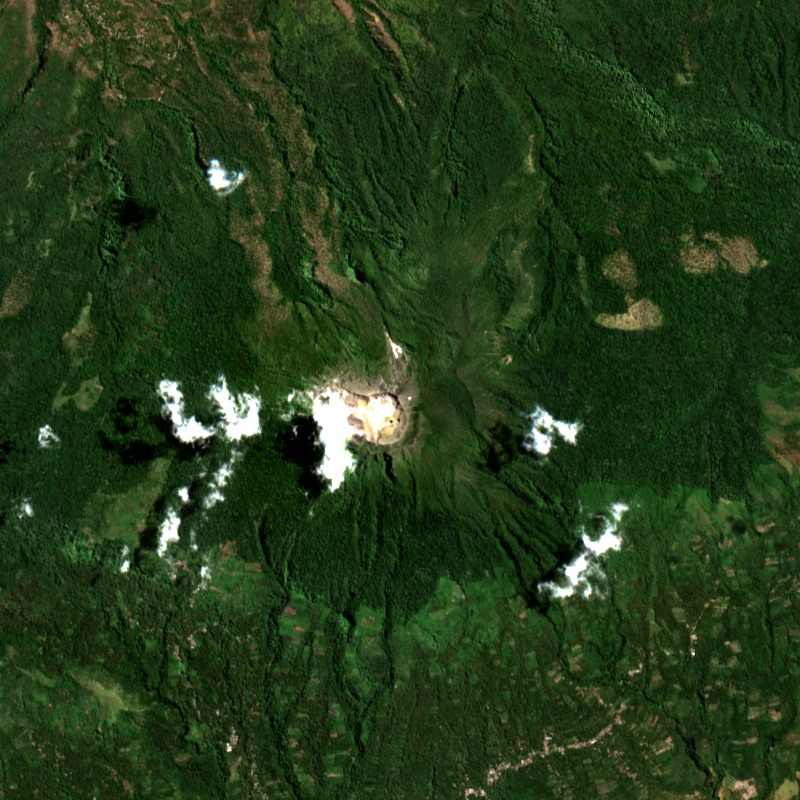
Egon's crater
The crater and its lake above Blidit; the north-coast highway at Waigete below. An entry or parking fee is charged locally; the amount was not confirmed.
Sentinel-2 · 2025-09-02 · 8 km box · contains modified Copernicus Sentinel data
Larantuka and Ile Mandiri
The finish town on the strait, Adonara across the water, the cone behind. Ferries to Adonara, Solor, Lembata and Kupang; Gewayantana airport about fifteen kilometres out.
Sentinel-2 · 2026-06-01 · 14 km box · contains modified Copernicus Sentinel data
For the scouts
The realistic corridor past Lewotobi, the reroute and the abort rule, checked against PVMBG every month.
Water and any resupply between Talibura and Larantuka on the north-coast line.
Whether an Ile Mandiri finale can be done safely at the end of a race.
Options touching this section
Bola south-coast loop — Maumere to the Bola coast on the south side of the Sikka isthmus before climbing back to Watublapi and Egon. 46 km instead of 29 km (+16 km). See the options chapter.
Lewotobi southern corridor via Boru — South of the Lewotobi twins through Boru on and around the Trans-Flores corridor. Only usable if the volcano's alert level and exclusion radius allow it on race day; the north-coast line stays the primary. 118 km instead of 96 km (+22 km). See the options chapter.
Beyond the main line
Optional loops and alternatives
The main course is one line. Around it the data carries seven optional pieces, each routed over the same track network and each with the same honesty label: concept, unscouted. Two of them make the Ultra variant; one more makes the Ultra+. The rest are alternatives for a scouting verdict, a village decision, a volcano or a time limit. For each option the map shows the option in its own colour and the main-course stretch it would replace in dashed vermilion, and the table gives the derived numbers side by side.
The concept document hoped the loops would add 120 to 250 kilometres. Routed honestly between their real endpoints they add far less; the numbers below are the ones that count.
Option
Kind
km
Climb
Replaces km
Δ km
Manggarai Timur interior loop
loop
204
5,450
170
+34
Bola south-coast loop
loop
46
1,332
29
+16
Inerie full circuit via Gurusina and the Sewowoto coast
loop
35
421
30
+5
Wae Rebo out-and-back
alternative
60
2,018
60
+0
Boawae to Nangaroro direct
alternative
49
1,151
118
-69
South coast direct: Aimere to Nangaroro
alternative
102
2,150
197
-94
Lewotobi southern corridor via Boru
alternative
118
1,812
96
+22
Ultra = main course with the Manggarai Timur interior and Bola coast loops (1,382 km, +35,913 m). Ultra+ adds the Inerie full circuit (1,386 km, +35,768 m).
Considered and not offered
A Kelimutu to Egon highland link. Computes at 120 to 163 kilometres with 4,700 to 7,300 metres of climbing and would drop the Lio weaving villages, the Paga and Koka beaches, Sikka and Maumere. It contradicts the cultural priority, so it is recorded in the data and not offered.
Riung to Mbay along the north coast. Computes at 48 kilometres with the lowest remoteness index on the course: a paved main road. No adventure value on its own; it would only make sense inside a re-ordered Ngada section.
An Adonara or Lembata epilogue by ferry. Named in the concept as a way to reach 1,600 kilometres or more. Ferries from Larantuka to Adonara, Solor and Lembata exist and are unreliable; not built as segments, and not on Flores.
loop · sections 3, 4
Manggarai Timur interior loop
OptionMain course stretch it replaces
What it is. Ruteng to the south coast at Borong, the unscouted Elar interior, back to the north coast at Pota; skips Ranamese, Liang Bua and Reo.
Why. Borong is a full-service regency capital on the south coast; Elar's sub-district has a forest lake with eight satellites, the Tetes Tana waterfall, Puncatiti weaving and cattle savanna; and the Elar to Pota link is the least-known stretch in the whole concept. It swaps the highland lake at Ranamese, the Liang Bua cave and the port of Reo for the interior of Manggarai Timur.
When. For the Ultra. Only after scouts have ridden Borong to Elar to Pota; no source addresses the Elar to Pota stretch at all.
Risks. The same August 2026 water emergency reached posts in Borong sub-district; Elar has minimal resupply and no confirmed beds.
What it is. Maumere to the Bola coast on the south side of the Sikka isthmus before climbing back to Watublapi and Egon.
Why. A quieter, far less documented coast on the south side of the Sikka isthmus before climbing to Watublapi and Egon. Bola is itself a weaving village, with the Watu Krus stone cross on its seafront.
When. For the Ultra, or for any edition that wants one more coast before the far east.
Risks. Unscouted road, minimal resupply, unreliable water at Bola.
Inerie full circuit via Gurusina and the Sewowoto coast
OptionMain course stretch it replaces
What it is. Round the whole cone: Bena to the rebuilt village of Gurusina, down the wild south flank to the sea at Sewowoto (Ena Bhara beach), then the coast road west to Aimere. Network-routed; the middle leg has the maximum remoteness index and is unscouted.
Why. Rounds the whole cone instead of crossing its shoulder: Bena to the rebuilt village of Gurusina, down the wild southern slope to the sea at Sewowoto, where waves spray through the rocks at Ena Bhara beach, then the coast road west to Aimere. Two more cultural stops and a coastal payoff, with far less estimated hike-a-bike than the shoulder.
When. For the Ultra+, or as the main line if the shoulder descent proves unsafe with a loaded bike.
Risks. The two legs south of Gurusina carry the maximum remoteness index in the data and nobody has scouted them; strong currents at the beach; no beds or water between Gurusina and Aimere.
What it is. If the onward trail from Wae Rebo cannot be done with a bike: climb to the village, descend the same path to Denge, then ride the remote-profile road to Todo.
Why. If the onward trail from Wae Rebo cannot be done with a bike, riders climb to the village, return by the same path to Denge and ride the remote-profile road to Todo. Almost the same distance as the main line, the same village, honest about the trail.
When. The default until scouts have walked the onward trail; every trekking account uses the Denge path both ways.
Risks. Descending the steep porters' steps with a loaded bike; timing the village welcome and the return in one day.
What it is. Skip Mbay and the Aesesa plain: cross from Boawae straight over to the south coast at Nangaroro. Shorter and less remote; a bad-weather or time-limit fallback.
Why. Cross from Boawae straight over the spine to the south coast at Nangaroro and skip Mbay and the Aesesa plain. Much shorter and less remote.
When. A time-limit fallback, a heat or water contingency, or a shorter edition.
Risks. Drops the rice plain and Mbay's full resupply; Nangaroro's water is unreliable at the far end.
What it is. Stay on the remote south coast of Ngada and Nagekeo instead of climbing back to the plateau: drops Mataloko, Ebulobo, Boawae and Mbay. High remoteness, heavy climbing per kilometre, water unknown.
Why. Stay on the remote south coast of Ngada and Nagekeo from Aimere all the way to Nangaroro instead of climbing back to the plateau. High remoteness, roughly 36 metres of climbing per kilometre on tertiary and village roads, grey-stone beaches at Tonggo with coconut palms and thatched shelters.
When. A coast-hugging variant for an edition that has already made the plateau's cultural stops on another day, or for a shorter race.
Risks. Drops Mataloko, Wogo, Ebulobo, Boawae and Mbay, the section's whole volcano and highland-village content; weak resupply and unreliable water at both ends and nothing confirmed between.
What it is. South of the Lewotobi twins through Boru on and around the Trans-Flores corridor. Only usable if the volcano's alert level and exclusion radius allow it on race day; the north-coast line stays the primary.
Why. The Trans-Flores corridor south of the twin volcanoes through Boru, the sub-district capital with roadside restaurants and a PVMBG observation post. Shorter to plan, longer as routed, and inside the zone that ash has closed repeatedly.
When. Only if PVMBG's alert level and exclusion radius allow it on race day, decided in race week against the live bulletin, with the north-coast line as the primary and an abort rule agreed in advance.
Risks. Everything that section 10 says about Lewotobi: eruptions, ash on the road, lahars in the river corridors, a radius that has been 4, 5 and 8 kilometres within a single year.
Flores is volcanically and seismically alive, hot on its coasts and cold on its ridges, and it carries malaria. None of this argues against the race; all of it argues for dated information, pre-agreed rules and a medical plan. Volcano statuses below are the last confirmed as of early September 2026 and must be re-read from PVMBG and MAGMA Indonesia monthly and in race week.
Volcano
Summit
Last confirmed status (dated)
Handling on the course
Lewotobi Laki-laki / Perempuan
1,584 / 1,703 m
Level III, 5 km exclusion, lahar warnings (27 Aug–2 Sep 2026); Level IV at times in 2024–2025; 778 eruptions in 2026 by 27 Aug
Section 10: no-go zone; north-coast corridor primary; Boru corridor gated by a race-week decision
Iya (Ende)
637 m
Level II, 2 km stay-away radius (through June 2026); Level III Nov 2024 to Jan 2025
Section 7: no course dependency on the southern peninsula; re-check before Ende
Kelimutu
1,639 m
Level I; middle-lake temperature rose 28 to 35 °C in June 2026; crater-wall slide Jan 2026 judged weathering
Section 8: mandatory dawn stop; no rim approach, no camping, regardless of level
Ebulobo
2,124 m
Level I in the last public round-ups; summit-area landslides after the 15 Aug 2026 M7.7 earthquake, no rise in activity
Section 6: course rounds the base; summit is optional and guided
Section 10: optional hike-a-bike gated by status; no lingering at fumaroles
Inerie
2,245 m
Not on active alert lists; last reported smoke 1911
Section 5: hazard is the loose, exposed hike-a-bike terrain, not eruption
Wai Sano
903 m
No confirmed Holocene eruption; hot springs and solfataras active
Section 1: context only
Ile Mandiri
1,502 m
Dormant, not actively monitored
Section 10: optional finale; steepness and fatigue are the hazard
Rokatenda (Palue)
875 m
Episodic unrest, fatal eruption 2013; offshore
Context for the north coast; not on the course
Earthquakes and tsunamiThe 12 December 1992 M7.7 earthquake and tsunami killed about 2,000 people around Maumere and on Babi island, with a 26-metre run-up at Riang-Kroko. On 15 August 2026 a M7.7 earthquake 68 kilometres north-north-west of Ende killed at least 47 people, damaged hundreds of houses in Nagekeo and produced more than 230 aftershocks; a tsunami warning was lifted the same day. Check road and bridge damage reports in Nagekeo before planning near Boawae; carry a tsunami awareness note for the whole north coast.
Water and heatThe north coast and the Nagekeo interior were on emergency water trucking in August 2026. Mandatory carry capacity, coasts ridden early and late, a heat-illness plan, planned water points only where unavoidable.
Malaria and dengueEast Nusa Tenggara is among Indonesia's highest-malaria provinces; Sikka regency was named among the concentrations in 2023, while several Flores districts hold elimination certificates. Prophylaxis advice from a travel clinic, repellent, nets at checkpoints, and symptom awareness in the briefing.
SeasonLate June to September is the dry, cooler south-east monsoon; August is the driest month. Coastal nights around 19 to 20 °C, highland towns noticeably colder; Ruteng averages about 16 °C. Landslides carry from the wet season into early dry season on cut slopes.
AnimalsFree-roaming village dogs everywhere on course (standard bikepacking advice, rabies pre-exposure vaccination to be considered). Saltwater crocodiles are documented on Flores' coasts, including a fatality in West Manggarai: no wading or swimming at river mouths, mangroves or estuaries, especially at dawn and dusk. Komodo dragons are on the islands, not on the course.
RoadsThe Trans-Flores is used only for short links and never at night in towns; ash has reduced visibility on it through Talibura, Ile Bura and Titehena during eruptive phases. Off the highway, road quality is often poor and better suited to motorbikes than cars, which is the point.
Story and protocol
Cultural threads and protocol
The course is built to carry a handful of stories from one end of the island to the other. They are also the reason the race must arrive as a guest.
Deep time
Liang Bua, Mata Menge
A one-metre-tall human relative excavated in 2003, dated to 60,000 to 100,000 years; and, in the So'a basin, a jaw and teeth from about 700,000 years ago. Flores was an island of its own evolution long before anyone now living.
Ngadhu and bhaga shrines, one pair per clan; conical mbaru niang houses; spider-web fields divided from a centre. Living social orders made visible in stone, thatch and rice.
Three living ikat traditions: Lio, Sikka and Manggarai. Back-strap looms, resist-tied thread, natural dyes where they survive (Watublapi still uses them; the coastal Lio villages mostly do not). Buying cloth is the honest way to support a village.
Fire and souls
Kelimutu; every volcano on the route
The three lakes as the sorting place of the dead in Lio belief, fed every 14 August at Pati Ka. Ile Mandiri as the ancestor of the Larantuka kingdom. Inerie faced by every shrine beneath it.
Portugal and Rome
Sikka, Lela, Ledalero, Larantuka, Solor
A Dominican stone fort on Solor in 1566; a wooden church at Sikka in 1899; a seminary at Ledalero that has formed 1,500 priests; five centuries of Semana Santa at Larantuka. More than four in five people on Flores are Catholic.
The republic
Ende
Sukarno's exile years, 1934 to 1938, and the breadfruit tree where the Pancasila is said to have been shaped.
Combat as ritual
Cancar and Manggarai (caci); Boawae (Etu)
Whip-and-shield fighting at the Penti harvest festival; one-handed boxing in palm-fibre gloves in the Nagekeo harvest cycle in June and July. Attended only by consent, never staged.
Sea people
Wuring; the Bajo coast
A stilt village of Bajo and Bugis families over the tidal flats of Maumere bay, one of very few on an island of highland farmers.
Arriving as a guest
Arrive slowly and greet the elders or the head of the household before anything else; a checkpoint in a village exists because the council said yes.
Sign the guest book and leave the donation or contribution the village has set; where betel (sirih) is offered, accept it.
Ask before photographing people, house interiors, ceremonies or the shrines; some structures are restricted.
Dress modestly in villages and churches; no swimwear away from the beach.
No naked flames, stoves or smoking near thatched houses. Gurusina lost 27 houses in one evening in 2018; Wologai lost 22 in 2012.
Buy cloth, food and beds from the village itself; that income is the reason the race is welcome.
Working communities that have not agreed to host (Wuring, the seminaries, the geothermal villages) are passed through, quietly, not treated as checkpoints.
Getting there, getting out, getting help
Logistics
A thin, well-serviced spine of five small airports, one paved highway, six full-resupply towns with hospitals, and how quickly it thins once the course leaves it.
Airports
Labuan Bajo, Komodo (LBJ)
The start. Denpasar four to six times a day, Jakarta with five airlines, Lombok, Kuala Lumpur; Singapore service in flux in 2025–2026. The only hospital in West Manggarai is here (Siloam).
Ende, H. Hasan Aroeboesman (ENE)
Two kilometres from town; Wings Air to Kupang and Labuan Bajo. Mid-course medical evacuation point.
Bajawa, Turelelo-Soa (BJW)
Twenty-four kilometres north of Bajawa; flights to Kupang and Ende.
Maumere, Frans Seda (MOF)
Five kilometres from town; Wings Air and Nam Air to Kupang, Labuan Bajo, Makassar. Repeatedly closed by Lewotobi ash, once from July to December 2024.
Larantuka, Gewayantana (LKA)
About fifteen kilometres out; regional carriers from Kupang. Shares the eruption-driven suspensions.
Ferries
Labuan Bajo – Sape (Sumbawa)
The classic overland link from Bali; current timetable not confirmed.
Aimere – Waingapu (Sumba) / Kupang
ASDP, Tuesdays and Fridays to Sumba per the curated data.
Mbay (Marapokot) – Palue / Kewapante
Small ASDP links along the north coast.
Larantuka – Adonara / Solor / Lewoleba / Kupang
KMP Ile Labalekan and KMP Ile Mandiri on multi-day rotations; cancellations happen. No direct ferry back to Labuan Bajo: onward travel from the finish is by air.
Resupply and medical hubs
Labuan Bajo
Full resupply, supermarkets, ATMs, Siloam hospital, motorbike mechanics; no bicycle shop found.
Ruteng
Full resupply, market, RSUD Ruteng, many homestays; cold nights at 1,200 m.
Bajawa
Full resupply, market, ATMs, regional hospital.
Ende
Full resupply, RSUD Ende, airport; bicycle dealers listed in directories on Jalan Kemakmuran and Jalan Kelimutu, unconfirmed.
Maumere
Full resupply, TC Hillers hospital, airport; motorbike repair, no bicycle shop confirmed.
Larantuka
Full resupply, RSUD Larantuka, airport, port.
Money, phones, papers
Telkomsel has the most reliable coverage on Flores; Indosat is a cheaper second choice in towns.
ATMs in the six hub towns and a few sub-district capitals; cash everywhere else.
Visa on arrival about USD 35 for 30 days, with a 2026 increase proposed; Komodo park fees and quotas changed in 2026: quote current figures, not these.
Homestays and guesthouses in villages run roughly IDR 150,000 to 450,000 a night where they exist; book Moni ahead in season.
Format
Reference
The Silk Road Mountain Race: about 2,050 km and 35,000 m of climbing in 2026, a 14-day limit, three staffed checkpoints, fully self-supported, a field of around 130.
Flores
One stage, fixed route, self-supported, mandatory checkpoints of which several are cultural, roughly two weeks, late June to September. The numbers on the following pages are the course's own, derived from the routed geometry.
Appendix
Photographs to source
The satellite imagery in this brochure is Copernicus Sentinel-2 data, chosen for the least cloud over each place in the 2025 and 2026 dry seasons. Ground photographs could not be gathered in the environment that produced this document (every photo host was unreachable), so each place below carries the subjects worth shooting and the search terms most likely to find openly licensed photographs on Wikimedia Commons or Flickr. Credit and licence must travel with every image used.
Labuan Bajo · section 01harbour at sunset with liveaboard dive boats; riders and bikes at a start-line gathering with the bay behind them; airport arrivals / departures against hills; waterfront street market
Search: Labuan Bajo harbour · Labuan Bajo Flores sunset · Komodo Airport Labuan Bajo · Labuan Bajo waterfront
Mbeliling forest · section 01farm track cutting through cleared plots at the forest edge with the ridge behind; dense hill-forest canopy seen from a high point, mist in the valleys; a hanging parrot, monarch, crow or owl in the canopy; birders with scopes at dawn
Cunca Wulang canyon · section 01turquoise canyon pool between sheer rock walls; a cliff jump into the pool; the approach trail through rice terraces; narrow river gorge with cascading water
Cunca Rami waterfall · section 01waterfall dropping into a forest pool between rock walls; the steep descending jungle trail; riders carrying bikes on the forest trail (hike-a-bike)
Sano Nggoang crater lake and Wai Sano volcano · section 01the whole elliptical lake from a high rim viewpoint at dawn; steam rising off a solfatara on the south-east shore; a canoe or fisherman on the still water; forested caldera rim silhouette
Search: Sano Nggoang · Danau Sano Nggoang · Wae Sano lake Flores · Sano Nggoang crater lake
Werang · section 01the parish church spire against highland hills; the boarding-school compound and schoolchildren; a roadside kiosk/warung; the farm track approach into the village
Search: Werang Flores · Gereja Santo Klaus Werang · Sano Nggoang Manggarai Barat
Dintor · section 02white-sand Pantai Dintor with Pulau Mules offshore; small fishing boats pulled up on the beach; the coastal dirt track hugging cliffs; coastal village life
Search: Pantai Dintor · Dintor beach Flores · Satar Ruwuk Manggarai · Pulau Mules
Denge · section 02rice-field homestay at dusk with highland backdrop; porters and guides loading gear for the trek; trailhead signage / Pos 1; rainforest canopy on the ascent
Wae Rebo · section 02the seven mbaru niang in morning mist, shot from the ridge overlook on arrival; the Wae Lu'u welcome ceremony; interior of a mbaru niang (levels, sacred drum, hearth); weavers working on the veranda; porters carrying loads / bikes up the forest trail
Todo · section 02Niang Todo exterior against the highland backdrop; village elders receiving guests / guest book ceremony; interior detail of the drum house (if permitted); the ridgeline view back toward Wae Rebo's mountains
Search: Kampung Todo Manggarai · Todo village Flores · Niang Todo · Manggarai traditional house
Iteng (Satar Mese south coast) · section 02pasar Iteng market stalls; south-coast beach at the village; the road climbing away from the coast toward the highlands; parish church
Iteng / Satar Mese south coast · section 03rice paddies and coastline near Iteng at dawn; the road switchbacking up out of the coastal plain toward the highlands; everyday village life -- market stalls, motorbikes, church
Ruteng (highland capital: cathedral, market, Golo Curu) · section 03Golo Curu grotto with Ruteng and rice terraces below at golden hour; Ruteng Cathedral facade and plaza; the morning market -- produce stalls, colour, activity; cool-highland light contrasted with the hot coast just descended
Cancar spider-web rice fields (Lingko Cara) · section 03aerial/high-angle shot of the full spider-web pattern from the viewing hill; close-up of a lodok centre point and radiating paddy edges; farmers working the fields at ground level for scale/contrast with the aerial pattern
Search: Cancar rice field · Lingko Cara · spider web rice field Flores · lingko Manggarai
Poco Mandasawu and Poco Ranaka massif · section 03the massif skyline from the Ruteng-Ranamese road; hike-a-bike riders on an exposed volcanic trail with cloud below; Anak Ranakah's dome shape against the older Ranakah edifice
Search: Poco Mandasawu · Ranakah volcano · Poco Ranaka Flores · Gunung Ranaka
Ranamese lake, Cunca Rede waterfall and the Ruteng Nature Recreation Park · section 03still water of Ranamese lake with rainforest reflection, early morning mist; the warung at the car park -- the highest rest stop on the course; Cunca Rede falls dropping through dense forest
Search: Ranamese lake · Danau Ranamese · Cunca Rede waterfall · Taman Wisata Alam Ruteng · Golo Lusang
Liang Bua cave · section 03wide shot of the cave chamber's high ceiling and light shaft (cathedral-like interior); the marked excavation area/pit inside the cave; the small onsite museum's fossil-cast displays; a guide explaining the site to visitors at the entrance
Reo (old north-coast port) · section 04fishing/cargo boats at the Wae Reo river-mouth port at golden hour; market stalls and the town's mosque/church side by side; the Dutch-era cannon on Puncak Gunung Batu overlooking the bay; savanna hills framing the harbour
The Reo-Pota-Riung savanna corridor (the water constraint) · section 04lontar (lontar/borassus) palms silhouetted on dry savanna hills; an empty coastal road disappearing into heat shimmer; dry riverbeds crossing the track; wide bay views from the savanna hills toward the sea
Pota · section 04the small parish church against savanna hills; fishing boats at the Pota shoreline; Telaga Teratai lake if accessible; village life -- market stalls, schoolkids, motorbikes on the coastal road
Riung and the Seventeen Islands Marine Park · section 04flying foxes lifting off Pulau Ontoloe at dusk, silhouetted against the sky; aerial/boat-eye view of the scattered islets and turquoise water; snorkelers over reef near Pulau Tiga/Rutong/Tembang; the Riung pier and fishing boats at first light; white-sand islet beaches
Search: Riung 17 islands · Pulau Ontoloe · Taman Wisata 17 Pulau Riung · Riung Flores flying fox
Manggarai Timur interior loop: Borong and Elar (Ultra alternative) · section 04Rana Kulan forest lake and its smaller satellite lakes; Tetes Tana waterfall; Puncatiti weavers at a loom; Borong's south-coast harbour and rice terraces; Pantai Ligota beach near Compang Ndejing
Mengeruda Hot Spring (Soa) · section 05Steaming pools in a jungle river valley; Riders soaking mid-climb with bikes parked streamside; Wide shot of the valley with Bajawa plateau escarpment behind
Search: Mengeruda hot spring · Soa hot spring Ngada · Air Panas Mengeruda Flores
Bajawa · section 05Market stalls with highland produce; Town rooftops with Inerie's cone behind; Morning mist over the plateau
Search: Bajawa Flores · Bajawa Ngada town · Bajawa market Indonesia
Wolobobo Hill · section 05Sunrise silhouette of Inerie from the platforms; Sea of mist below the ridge at dawn; Wooden walkway leading to the viewpoint
Search: Wolobobo Hill Bajawa · Bukit Wolobobo · Wolobobo viewpoint Flores
Bena · section 05Rows of thatched houses framing the ngadhu/bhaga square; Elder receiving guests at the entrance; Inerie's cone rising directly behind the village roofline
Search: Bena village Ngada · Bena traditional village Flores · Ngadhu bhaga Bena
Luba · section 05Carved animal-motif shrine detail; Quiet village lane with no other visitors; View back toward Bena's rooftops
Search: Luba village Ngada · Luba Bajawa Flores
Tololela · section 05Two facing rows of houses on the hillside; Villagers going about daily work, unposed; Terraced approach path up the hill
Search: Tololela village Ngada · Tololela Bajawa Flores
Gurusina · section 05Rebuilt thatched houses with fresh, unweathered roofing; Ngadhu/bhaga shrine pairs in the compound; View toward Inerie's summit from the village
Search: Kampung Adat Gurusina · Gurusina village Ngada · Gurusina fire traditional village
Inerie (2,245 m) · section 05Symmetrical cone at dawn from Wolobobo or Bena; Riders/hikers silhouetted on the scree slope; Summit view over the Savu Sea and Bajawa plateau; Ngadhu shrine post with Inerie behind it
Search: Inerie volcano Flores · Gunung Inerie · Mount Inerie Ngada
Sewowoto (Ena Bhara beach) · section 05Waves spraying through the water-blow rocks; White-sand beach with Inerie's slope rising inland; Fishing boats or motorboat approach from Waebela
Search: Ena Bhara Beach · Pantai Sewowoto · Pantai Waebela Ngada
Aimere · section 05Household arak still with smoke over an open fire; Lontar palm groves along the coast road; Ferry loading at the port, Sumba-bound
Mbay to Nangaroro: crossing the island's waist · section 07Aesesa rice plains near Mbay giving way to forested hills; the ridge crossing itself -- switchback dirt road with island-waist views to both coasts; descent to the south coast with the Savu Sea opening up
Search: Nagekeo Regency Flores · Mbay Flores Indonesia · Nangaroro
Maukaro (naming clarification, not on this route) · section 07
Search: Maukaro Ende Regency
Nangaroro · section 07grey-stone beach with fishing boats; homestay life in a working farming/fishing village; coast road hugging the shoreline toward Nangapanda
Search: Nangaroro · Nagekeo Regency coast
Nangapanda · section 07fishing village daily life; coast road signage toward Ende
Search: Nangapanda Ende Regency
Penggajawa Blue Stone Beach (Pantai Batu Biru / Batu Hijau) · section 07close-up of wet blue-green pebbles catching light; wide shot of the pebble shoreline against the Savu Sea; a local hand-sorting stones for the export trade; cyclists/bikes posed on the pebble beach as an overland-route landmark shot
Search: Pantai Batu Biru Penggajawa · Pantai Batu Hijau Penggajawa · Blue Stone Beach Ende
Ende (town) · section 07Ende harbourfront with fishing boats and Iya volcano behind; Pasar Mbongawani market scene -- woven sarongs, local produce; town streets with Lio traditional weaving for sale; hospital/resupply infrastructure as a practical race-logistics image
Search: Ende Flores · Ende town Nusa Tenggara Timur · Pasar Mbongawani
Iya volcano · section 07Ende town with Iya's cone rising behind the harbour; the southern peninsula and exclusion-zone approach; steam/plume shot if conditions allow (respect the 2 km radius)
Search: Mount Iya · Gunung Iya Ende · Iya volcano Flores
Sukarno's Exile House (Rumah Pengasingan Bung Karno) · section 07the colonial-era house facade on Jalan Perwira; preserved interior -- meditation room, library corner; period photographs and personal effects on display
Search: Rumah Pengasingan Bung Karno Ende · Sukarno exile house Ende
Bung Karno Contemplation Park / Pancasila breadfruit tree (Taman Renungan Bung Karno) · section 07the five-branched breadfruit tree against the seafront; commemorative plaque/monument in the park; wide shot combining park, sea, and Iya's silhouette
Search: Taman Renungan Bung Karno · Pancasila tree Ende
H. Hasan Aroeboesman Airport · section 07small regional terminal building; aircraft on the apron with coastal backdrop
Search: H. Hasan Aroeboesman Airport · Ende Airport ENE
Wolotopo (bonus: within section bbox, borders section 8) · section 07hillside village architecture; ikat weaving in progress; ceremonial houses
Search: Wolotopo village Ende · Lio traditional village Flores
Detusoko Rice Terraces · section 08Terraced paddies in morning light with mist in the valley; Suspension bridge over the small river; Rider on the road with terraces falling away below; Farmers working the paddies (with consent)
Search: Detusoko rice terrace Flores · Sawah Detusoko · Detusoko Barat rice field
Wologai · section 08Aerial or elevated view of the circular house ring around the ceremonial terrace; Stone-terraced ceremonial ground detail; A rebuilt traditional house next to an older one, if distinguishable; Village elder greeting visitors at the entrance
Search: Kampung Adat Wologai · Wologai traditional village Flores · Wologai Ende circular village
Moni · section 08Moni's main street at dusk with guesthouse lights on; Riders loading up before a pre-dawn departure; Hidden hot spring, steam rising in cool highland air; Rice terraces visible from village edge
Search: Moni village Flores · Moni Ende Flores · Moni Kelimutu village
Kelimutu National Park — the three lakes · section 08Wide dawn shot of all three lakes together from the main viewpoint, empty of crowds; Close detail of one lake's mineral-stained shoreline and colour; Riders/bikes at the viewpoint at first light; Mist rising off the crater at sunrise; The stairs/final approach as a hike-a-bike moment
Search: Kelimutu crater lakes · Danau Kelimutu · Tiwu Ata Polo · Kelimutu National Park sunrise
Jopu · section 08Weaver tying resist patterns before dyeing; Finished ikat cloth hung to dry or displayed; Village street with looms visible on verandas
Wolojita · section 08Market/district-centre street scene; Coastal road view showing exposure to landslide terrain; Weaver at work
Search: Wolojita Flores · Kecamatan Wolojita Ende · Wolojita ikat
Nggela · section 08Weaver demonstrating morinda-root dyeing; Finished ikat cloth with Nggela-specific motifs, displayed or worn; Village on its ridge with the coast visible below; The single-track access road through Jopu and Pora
Search: Nggela village Flores · Kampung Nggela ikat · Nggela weaving Ende
Koka Beach and Paga Beach · section 08Aerial or headland view of Koka's twin coves; Turquoise water and pale sand close-up; Riders arriving at the beach after the highland stages; Paga's simple beachside restaurants and highway frontage
Search: Koka Beach Flores · Pantai Koka · Paga Beach Flores · Paga Sikka Flores
Sikka village and the Old Church of St Ignatius Loyola · section 09wooden church facade of St Ignatius Loyola with its steep Baroque-influenced roofline; carved/painted ikat-motif interior details inside the church; old royal graves or Da Silva-family memorials near the church; fishing boats pulled up on the village shoreline with the church visible behind; a weaver at a backstrap loom working a dark-palette Sikka ikat cloth
Search: Sikka Flores church · Gereja Tua Sikka · St Ignatius Loyola church Sikka · Sikka ikat tenun · Kingdom of Sikka Flores
Lela · section 09the tall Mary statue on its hilltop against the sea, if confirmed reachable from the route; roadside Catholic shrines/crosses typical of this stretch; the south-coast road itself curving between Sikka and Lela
Search: Lela Sikka Flores · Bukit Nilo Maria statue · Bunda Maria Segala Bangsa Sikka
Ledalero Seminary · section 09the seminary's hilltop buildings and grounds; seminarians or clergy in daily seminary life (only with explicit permission, given it is an active institution); wide view from the seminary hill back toward Maumere and the coast
Search: Ledalero seminary Flores · Seminari Tinggi St Paulus Ledalero · SVD Divine Word Missionaries Flores
Maumere -- town and gateway · section 09Maumere's waterfront/harbour with fishing and cargo boats; the market (pasar) in full activity; Frans Seda airport building/apron; town streets giving a sense of scale as the largest town of the eastern half of the island
Search: Maumere Flores · Frans Seda Airport Maumere · Maumere harbour Flores · Sikka Regency Indonesia
Wuring · section 09rows of stilt houses over the tidal flat with plank walkways; fishing boats moored beneath the houses; nets drying on the walkways; wide view of the village against Maumere bay
Search: Wuring Flores · Wuring stilt village Maumere · Bajo village Flores
Koka Beach · section 09the twin coves and dividing headland from an elevated vantage; pale sand and turquoise water close-up; the unpaved spur road through cocoa forest; a rider on the beach access road as an adventure-travel image
Search: Koka Beach Flores · Pantai Koka · Paga Flores beach
Watublapi Ikat Weaving (Sanggar Bliran Sina) · section 10Backstrap-loom weaving in progress, hands and thread in close-up; Skeins of naturally dyed cotton (indigo blue, morinda red/brown) drying or bundled; Finished ikat cloth patterns laid out or worn; A welcome dance/music performance; Wide shot of the hillside hamlet and its houses
Mount Egon from Blidit (with Blidit hot spring) · section 10Fumarole steam venting from the crater rim, riders/hikers at a safe distance; The acid crater lake from the summit; Hike-a-bike through forest on the lower trail; Wide shot of Egon's cone from the north-coast highway near Waigete; Blidit hot spring, steam rising off the river
Search: Gunung Egon · Mount Egon Flores volcano · Egon crater lake · Blidit hot spring Flores
Colophon
Data, method and sources
Data and method
Course geometry: data/segments.geojson and data/routes.json in the project repository, routed over the Overture Maps road network (OpenStreetMap-derived) with the remote cost profile; anchors from data/nodes.geojson; places from data/pois.geojson with their own confidence and sources.
Elevation: SRTM 1 arc-second tiles (USGS), sampled every 50 m, median-and-mean smoothed, 10 m hysteresis threshold for climbing; bathymetry clamped to sea level.
Imagery: contains modified Copernicus Sentinel data 2025–2026, processed by ESA; cloud-optimised GeoTIFFs from the AWS Open Data registry (Element 84).
Desk research: a search pass in September 2026 over travel, news, official (PVMBG, MAGMA Indonesia, BNPB, USGS, GVP) and academic sources, recorded with confidence labels in the project's working files; volcano and earthquake facts are dated in the text.
Caveats
Every segment is concept status. Distances and climbing will change with scouted GPS tracks; the climbing threshold is a design choice still to be calibrated.
Track and path share on most computed pairs is low because OpenStreetMap knows Flores' roads far better than its footpaths. The remoteness the course is after may exist where the map is empty; only feet on the ground will tell.
Fees, opening hours and prices are those reported in 2025–2026 and are indicative.
github.com/technicaloutdoor/Flores-Race — course data, pipeline, GPX exports, this brochure's source and the research files behind it (docs/brochure/research). Built 2026-09-05.